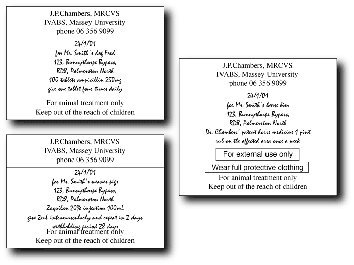

There are slight differences in the law depending on what sort of drug you are handling; this section represents best practice.
Every package of any sort of prescription animal remedy dispensed must be clearly labelled with the following information:
If the drug is in a container inside another container, eg, a tube inside a box, put the label on the container with the drug in it. If you sell a farmer a hundred bottles of penicillin (not recommended!), you must stick a label on each bottle. If you sell him a hundred intramammary tubes, it is usual to stick a label on the box.
For over the counter sales of animal remedies in the manufacturer's original packaging, this label is not necessary but still a good idea.
It is difficult to fit all the necessary information on a label, even if your writing is very small. It is likely in the near future that computer printed labels will be required. They are certainly a good idea.
Drugs should not be kept anywhere that food is stored. If you want to keep vaccines and milk in the fridge, you need two fridges. It is also illegal to prepare or pack drugs in any room where food or drink is prepared or consumed. Children and unauthorised people must not have access to the drug storage area. Buildings or vehicles containing drugs must not be left unattended unless they are properly secured.
Many drugs have specific storage requirements; many must be refrigerated. Most drugs will have a longer shelf life if stored in a cool dry place out of direct sunlight. The back of a car is about the worst possible place to store drugs.
All animal remedies sold commercially must be registered with the NZFSA or exempted from registration, but you are allowed to make up your own drugs for animals under your care, ie, you must have examined the animal and have been given responsibility for its treatment by the owner. As this is an discretionary drug use, all the considerations above apply. You cannot put home made medicines on general sale without going through the registration process (which is a serious exercise in filling in forms and spending money).
Making up mixtures requires knowledge of the chemical compatibility and stability of drugs, and is best avoided. If it must be done, it may be better to write a prescription and get a pharmacist to do it.
If registered animal remedies are bought in bulk and repackaged, they must only be used for animals under your care. Once the seal on the original container is broken, the drug company is unlikely to take responsibility for any problems with the drug (there is usually something on the label along the lines of “use within two days of opening”). Particular attention must be paid to labelling.
Repackaging bulk drugs because you anticipate a requirement for small lots is acceptable: doing it to save money is not.
The exact legal requirements for packaging veterinary medicines are unclear, but veterinary surgeons dispensing human medicines must comply with the same regulations as medical practitioners and pharmacists. The veterinary profession cannot afford to be sloppy in this, or the right to dispense drugs may be removed. Child proof safety containers for all dispensed drugs are highly recommended. Envelopes are not acceptable.
Unopened manufacturer's packaging is usually acceptable - stick the label where it will not obscure any warnings etc.
Foil wrapped / blister packed tablets are legally regarded as childproof containers and may be dispensed in resealable plastic bags; loose tablets must be in a proper childproof rigid container.
If preloaded syringes are dispensed, the needle should be supplied separately and the syringe should be capped to prevent leakage.
All packages (no matter how small or awkwardly shaped) must be properly labelled. Most drugs given to animals will also affect people; anyone handling the drugs must be properly trained and appropriate safeguards taken. This is the responsibility of the veterinary surgeon. The HSNO Act is likely to make this more onerous.
Do not just tip them down the sink or throw them in the bin! The veterinary surgeon is directly responsible for safe disposal of drugs - think about their possible effects on the environment. In most cases the drugs should be incinerated at high temperatures (do not just throw them in the fire either!). Talk nicely to your local chemist or hospital, or pay for them to be disposed of properly as clinical waste.